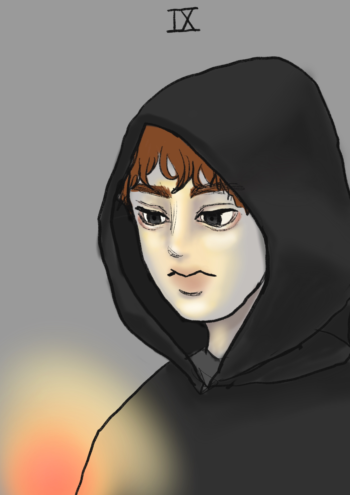

The hermit
시간의 제한성, 육체의 유한성, 소멸, 고독함, 홀로 있음, 고요함, 인내심, 성찰, 내적인 평화로움, 겸손함, 기다림
어떤 것도 자기 수명 이상을 살지 못하며 어떤 것도 불변한 것은 없다. 이것은 우리 삶의 단순하고도 명확한 단면이다.
그럼에도 불구하고 이런 사실을 배우기란 여간 힘든 게 아니며, 종종 나이가 들고 시련을 겪은 후에야 겨우 인식하게 된다.
크로노스는 시간의 의미를 구현하는 신일 뿐만 아니라 시간에 저항하는 신이다.
그러므로 그는 수모를 겪고 권좌에서 쫓겨나 고독과 고요 속에서 지혜를 배우는 것이다.
여러 가지 면에서 그는 육체 자체를 상징한다. 육체는 가차 없이 늙어 가지만 그 숙명에 저항한다.
고독의 문제, 우리는 궁극적으로 혼자이며 언젠가 소멸하게 될 존재라는 인식은 모든 인간들이 대면하게 되는 딜레마이다.